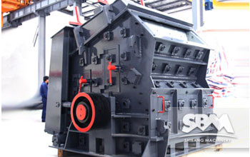
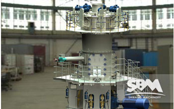
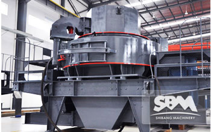
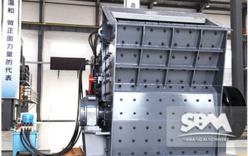
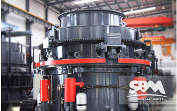
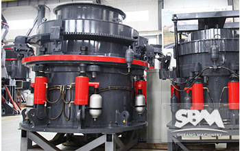
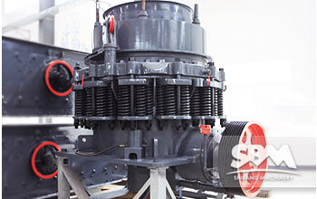

- 
Blow Bar Fixing Method
In impact crusher, raw materials are crushed by the force produced by the high-speed blow bar. Blow bar is the spare part directly .
MORE INFO >Live Chat - 
Vertical Mill Parameters
Under the background of the current industry, based on the requirement of energy saving and emissions reduction of national policy.
MORE INFO >Live Chat - 
Vertical Shaft Impact Crusher
In the current era of the demand of river sand is insufficient; the use of the vertical shaft impact crusher plays a very important role.
MORE INFO >Live Chat - 
Impact Crusher Optimization
Impact crusher is one of the impact crusher, which makes use of the high speed of plate hammer impact kinetic energy.
MORE INFO >Live Chat -

Impact Crusher's Blow Bar
According to the information, the main damage form of blow bar is loose and broken, when the below bar loose or broken.
MORE INFO >Live Chat - 
Crushing Machine Automatic
Realize the target of "more crushing and less grinding", improve the crushing efficiency.
MORE INFO >Live Chat - 
Crusher Machine Development
There are numerous stone mienrals resources all over the world. Stone crusher plant is operated in every corner stone and rock resources are found.
MORE INFO >Live Chat - 
Cone Crusher Problems
Cone crusher is a kind of very commonly used crushing equipment in crushing plants. But in the work process of cone crusher.
MORE INFO >Live Chat